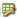
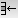
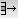

Welcome to MySource Matrix WYSIWYG Editor Help
If you set the content type for a division to WYSIWYG, the Edit Contents icon  is displayed. Click this icon to switch into the WYSIWYG editor.You can now enter your content.
The non-standard buttons have the following functions: (Click on the links for more detailed information)
| Icon | Function | Description |
|---|---|---|
 |
Insert Table | Allows you to insert a new table. |
|
Table Properties | Allows you to edit table properties or remove the cell borders. |
|
Font Colour | Allows you to change the font colour. |
|
Background Colour | Allows you to change the background colour. |
|
Insert Link | Allows you to insert a link to an external site or any asset. |
|
Remove Link | Removes a link. |
|
Insert Anchor | Allows you to insert or remove an anchor. |
|
Insert Image | Allows you to embed an image file. |
|
Embed Movie | Allows you to embed a movie file. |
|
Insert Abbreviation | Allows you to insert an abbreviation. Please note that Internet Explorer does not support the automatic insertion of an abbreviation tag, and you may enter this tag manually in the HTML source view.
TIP:
For accessibility reasons, it is recommended that you insert an abbreviation for the first occurrence of the abbreviation on each page.
|
|
Insert Acronym | Allows you to insert an acronym. Enter an acronym and definition, and the acronym is displayed on your page, with the definition displayed when the user rolls their mouse over the acronym.
TIP:
For accessibility reasons, it is recommended that you insert an acronym for the first occurrence of the acronym on each page.
|
|
Check Spelling | Check the spelling of the text on the page. |
| Current Style | Shows the current style. | |
|
Toggle HTML Source | Toggles between the HTML source view and the WYSIWYG view. |
|
Replace Text | Allows you to remove font, style, class, table and span tags, non-HTML, double spaces, empty paragraphs, all tag attributes, and to change Word bullets.
TIP:
This is useful if you are cutting and pasting test from external applications such as Microsoft Word, which include certain tags which you may wish to remove from your HTML.
In addition, when you click Commit, your text is automatically run through HTMLTidy, which checks the validity of your HTML. |
| Choose Language | Allows you to define the language attribute for the selected content using the Choose Language dropdown. You may remove existing language attribute by selecting the 'None' option from the drop down.
TIP:
You may click on the Visual Aid icon button to turn on the visual aid for language attribute.
|
|
|
|
Definition List | Allows you to enter a definition term or a definition description, encapsulated by a definition list tag. |
| Citation | Allows you to add cite tags to the selected html content. | |
|
Definition | Allows you to add dfn tags with title attribute to the selected html content. |
|
Blockquote | Allows you to add blockquote tags to the selected html content. The nesting of multiple blockquote is not allowed. |
|
Visual Aid | Turns on the visual aid for Table Border, Table Header, Anchor Tag and Language Attribute. |
For example, if your Expand Keywords tool has the abbreviation "10d" configured to expand to "10 days", when you type "10d" into your bodycopy, you will be prompted to confirm that you wish it to be expanded to "10 days".
We will now discuss Insert Table, Table Properties, Insert Link, Embed Movie and Insert Image in more detail.
Insert Table
Click on the Table Functions icon , followed by Insert Table on the drop down menu. The following pop-up window is displayed:

- Dimensions
- Rows: enter the number of rows for your new table.
- Cols: enter the number of columns for your new table.
- Table Headers
- First Row:Check this option to make all cells on the first row a table header.
- First Col: Check this option to make all cells on the first column a table header.
TIP: You may click on the Visual Aid icon button to turn on the visual aid for table cells.
Header cells will be given a TH tag rather than a TD tag in your HTML. This is required if you wish your content to be accessible.
- Style Attributes
- Class Name:CSS class name to be used for this table.
- Width: enter the width of the table on the page. You can enter the following units:
- %: specifies the width of the table as a percentage of the current screen width.
- px: specifies the exact width of the table in pixels.
- Borders: this attribute
indicates the width of the table border in pixels. You can
set the value to 0 to display the table with
no border.TIP: If no border setting is entered, newer browsers will display a one-pixel border by default.
- Cell Spacing: enter the amount of space between the cells in the table in pixels.
- Cell Padding: enter the amount of space between the edges of the cells and the contents of the cell in pixels.
TIP: If you enter a percentage of the current screen width, the width of the table will change if the window is resized. - Optional Attributes
- Summary: enter the summary to be used for your table into the text box. This does not appear in your page content, and is required for accessibility purposes.
Table Properties
Click on the Table Functions icon , to display the Table Properties pop-up window:

You can use this window to select table, cells, rows or columns, and apply your chosen formatting. The resulting table will be shown on the left hand side of the screen.
Selectors
- Table: this icon is selected by default, it will select the table.
- Cell: if this icon is selected, when you click in the table on the left hand side of the screen, it will select an individual cell.
- Row: if this icon is selected, when you click in the table on the left hand side of the screen, it will select a row.
- Col: if this icon is selected, when you click in the table on the left hand side of the screen, it will select a column.
- Cell selected
- Row selected
- Col selected
Cell
- Add Colspan: click this button to span the cell you currently have selected over the next column.
- Delete Colspan: click this button to remove the colspan of the currently selected cell.
- Add Rowspan: click this button to span the cell you currently have selected over the next row.
- Delete Rowspan: click this button to remove the rowspan of the currently selected cell.
- Abbrev: enter an abbreviation to be used for the table.
- Axis: enter an axis to be used for the table.
- Scope: enter the scope to be used for the table.
- Headings: click on this button to select cells to be used as heading cells. They will be given a TH tag rather than a TD tag in your HTML. This is required if you wish your content to be accessible.
Align
Click on an icon to set the alignment of the currently selected cell or row. You can choose from:- Vertically align left
- Vertically align centre
- Vertically align right
- Horizontally align top
- Horizontally align middle
- Horizontally align bottom
Table
- Add Row: click on this icon to add a row below the selected row, or below the row of the selected cell.
- Delete Row: click on this icon to delete the selected row, or below the row of the selected cell.
- Insert Column: click on this icon to insert a column to the right of the column that the currently selected cell is in. If you currently have a row selected, you cannot select this option.
- Delete Column: click on this icon to delete the column that the currently selected cell is in. If you currently have a row selected, you cannot select this option.
- ID: enter the unique ID to be used for your table into the text box. This enables the table to be identified in a stylesheet.
- Caption: enter the caption to be used for your table into the text box. This is a caption that appears at the top of your table, and is suggested for accessibility purposes.
- Class Name: enter the class name to be used for your table into the text box. This can be a pre-defined CSS class name.
- Width: enter the width of the table on the page. You can choose to use CSS or HTML width, the following units can be used:
- %: specifies the width of the table as a percentage of the current screen width.
- px: specifies the exact width of the table in pixels.
- Border: enter the border of the table on the page. You can choose to use CSS or HTML border.
- Cell Spacing: enter the amount of space between the cells in the table in pixels.
- Cell Padding: enter the amount of space between the edges of the cells and the contents of the cell in pixels.
- Summary: enter the summary to be used for your table into the text box. This does not appear in your page content, and is required for accessibility purposes.
- Frame: select which sides of your table cells should have a border. You can select from: Empty, No sides, The top side only, The bottom side only, The top and bottom sides only, The right and left sides only, The left-hand side only, The right-hand side only, and All four sides.
Colour
You can use the colour picker to set the background colour of the cell or rows that you select, or their borders. The icons at the top left hand side of the colour picker determine whether you set the background colour or the border:- : click this icon to set the background colour of the cell or row that you select.
- : click on this icon to set the border colour of the cell or row that you select.
Insert Link
To add a hyperlink, select a piece of text and then the Insert Link icon. The following pop-up window is displayed:

You can insert a link to any external URL, or any internal asset. The options are as follows:
General
- Protocol: select the protocol from the following options:
- http:// Used to create a link to a web page with a normal connection
- https:// Used to create a link to a web page with a secure connection using SSL
- ftp:// Used to create a link to an ftp server
- mailto: Used to create a link to an email address
- Link: enter the address of the link as appropriate for the protocol you select. E. g. if the protocol is http:// the link might be http://www.squiz.net. If the protocol you select is mailto: the link might be person@yoursite.com
- Select Asset: you can select a MySource Matrix asset to which to link. Move your cursor over to the asset tree to select the appropriate asset — only relevant asset types are now selectable (for example, you cannot link to a user). Hold the right mouse button down on the name of the asset you wish to select, and right click on the Use Me menu option. The Name and Asset ID of this asset now appear in the text box.
- Anchor Name: type the name of an anchor on the linked external page, or MySource Matrix page asset.
Options
- Status Bar Text: enter optional text to be displayed in the status bar at the bottom of the window.
New Window Options
Select whether to show the linked asset or URL in a new window or the current one. If you select Yes to show a new window, you can select whether or not to show the tool bar, menu bars, location bar, status bar or scroll bars and whether the window is resizable or not. You can determine the exact size of the new browser window by specifying the height and width in pixels.
Insert Image
If you select the Insert Image icon, the following pop-up window is displayed:

The options when inserting an image are as follows:
General
- Image URL: to select an image file to embed, move your cursor over to the asset tree to select the appropriate image — only images are selectable. Hold the right mouse button down on the name of the image you wish to insert, and right click on the /Use Me menu option. The Name and Asset ID of this image asset now appear in the text box.
- Alternate Text: the alternate text is set by default to the name of the file you have just selected. You can type into the box to alter the alternate text, if required
Optional Attributes
- Long Description: You may enter the link manually or use the asset finder to choose a Standard Page asset to specify the value of the 'longdesc' attribute.
Layout
- Alignment: controls the alignment of the image within the div.
- Border Thickness: enter the width in pixels of the image border.
- Horizontal: enter the spacing to be applied to the left and right of the image.
- Vertical: enter the spacing to be applied to the top and bottom of the image.
Size
- Width: enter the width of the image in pixels.
- Height: enter the height of the image in pixels.
Embed Movie
If you select the Embed Movie icon, the following pop-up window is displayed:
.mov, .swf, .wmv, .asf, .asx, .mpg
The options when inserting a movie are as follows:
General
- Movie URL: to select an movie file to embed, move your cursor over to the asset tree to select the appropriate movie — only movies are selectable. Hold the right mouse button down on the name of the movie you wish to insert, and right click on the /Use Me menu option. The Name and Asset ID of this movie asset now appear in the text box.
Control
For wmv, asf and asx files you can set the following options:
- Autostart: check this box to autostart the movie.
- Loop: check this box to loop the movie. For mov, wmv, asf and asx files you can set the following option:
- Show Controls: Check this box to show the movie controls.
Size
- Width: enter the width of the movie in pixels.
- Height: enter the height of the movie in pixels.